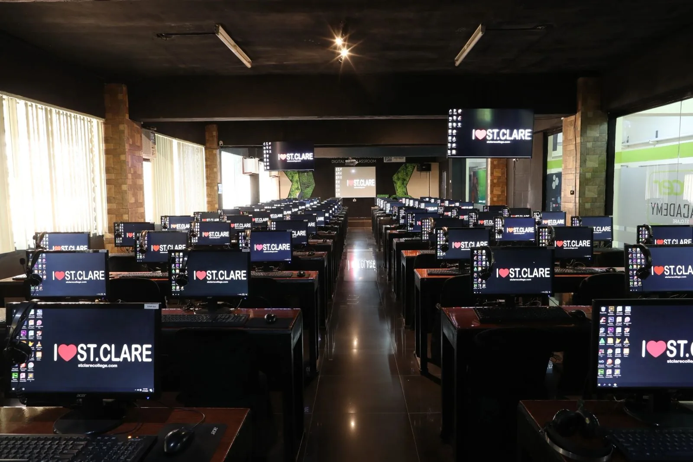
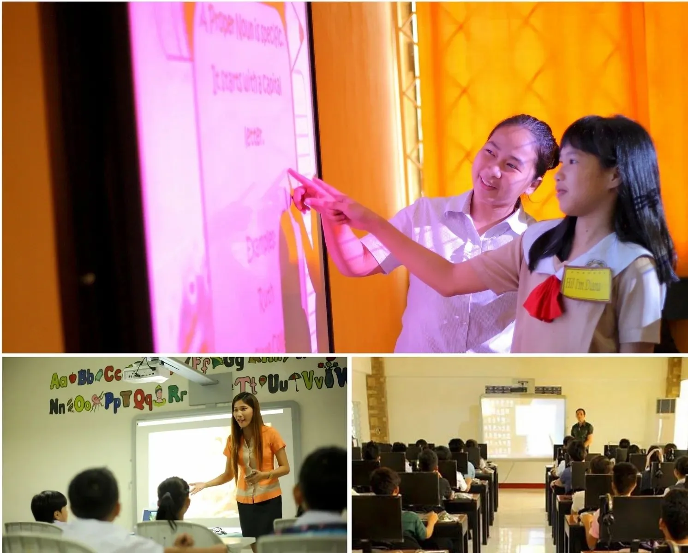
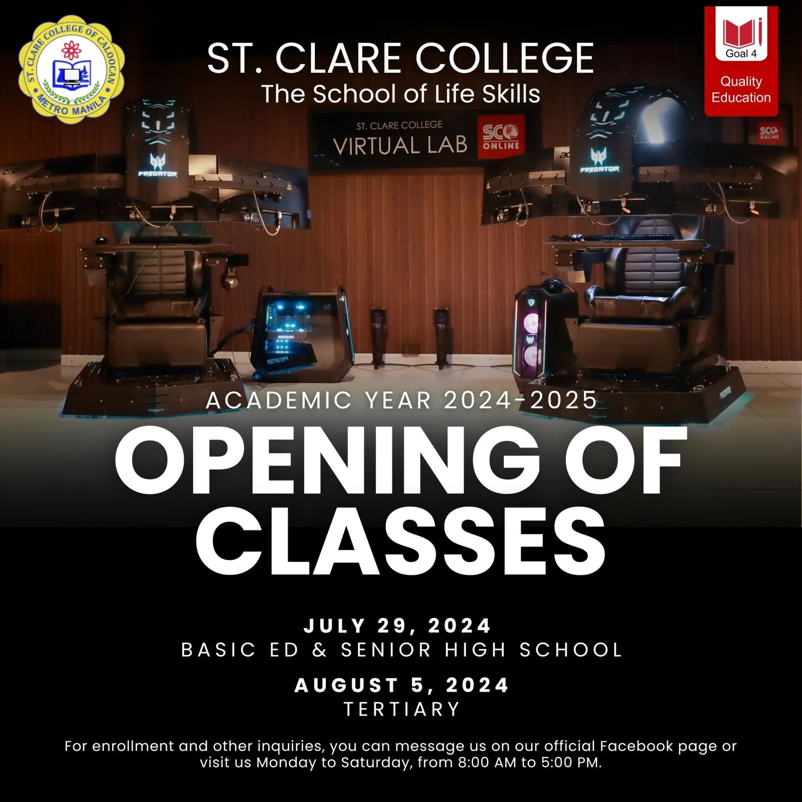
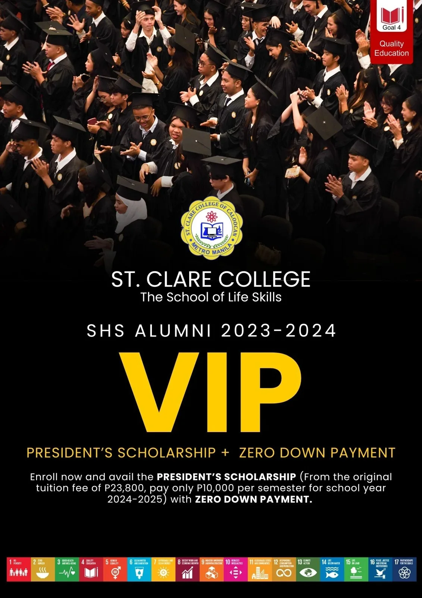

The Schoolof Life Skills
St. Clare College of Caloocan educates learners from Nursery to College, on one campus in Caloocan City and online through St. Clare Online.
BS Hospitality Management, BS Business Administration, BS Computer Science, Bachelor of Elementary Education, BSEd English, BSEd Mathematics, BS Tourism Management, AB Political Science, SHS: ABM, SHS: HUMSS, SHS: Arts & Design, SHS: TVL-ICT, SHS: TVL-HE, Nursery to Grade 10
Academic programmes
From a child's first school day to a bachelor's degree, every stage of learning happens at St. Clare.
College
Eight bachelor's degree programmes
- BSCSBS Computer Science
- BSHMBS Hospitality Management
- BSTMBS Tourism Management
- BSBABS Business Administration
- BEEdElementary Education
- BSEd-EngSecondary Education, Major in English
- BSEd-MathSecondary Education, Major in Math
- AB PolSciAB Political Science
Senior High School
Academic, Arts & Design and TVL tracks
- ABMAccountancy, Business & Management
- HUMSSHumanities & Social Sciences
- A&DArts & Design
- ICTTVL - Information & Communications Technology
- HETVL - Home Economics
Proud moments, on video
The Professional Mace, the Virtual Lab and the commencement of the Stars of 2024, from the St. Clare College channel.
St. Clare College channel5 videos
A college built for professional life
The first college in the country to use e-boards in all 95 classrooms, with computer laboratories, a library and learning resource center, and a Virtual Lab for mixed reality.
- 1985
- Founded 31 August in Caloocan City
- 95
- Classrooms, every one with an e-board
- 38th
- Commencement exercises, June 2024
- 2
- Learning modalities: full online or blended

College degrees
Theory in class, mastery in the laboratory, kitchen and field.
Bachelor of Science in Hospitality Management
BSHM
Bachelor of Science in Business Administration
BSBA
Bachelor of Science in Computer Science
BSCS

Bachelor of Elementary Education; Bachelor of Secondary Education, Major in English & Math
BEEd / BSEd
Bachelor of Science in Tourism Management
BSTM
Bachelor of Arts in Political Science
AB PolSci
How to enroll
Bring your requirements in a long brown envelope and complete three steps on campus, or enroll online through the IMS.
Pay the matriculation fee
Where: Cashier
- Proceed to the cashier and pay the matriculation fee (designated cashier only).
- Get and keep your OFFICIAL RECEIPT.
Fill up the registration form
Where: Lobby
- Go to the LOBBY and present your Official Receipt to the Enrollment Officer.
- Fill up the REGISTRATION FORM.
- Check that your SUBJECTS are listed on the registration form.
Register online for your schedule
Where: Library, 3rd floor
- Proceed to the LIBRARY on the 3rd floor for ENLISTMENT at stclareonline.com/ims.
- Your section and schedule are posted on the website and sent by email by your Program Head.
What happens next: your Program Head posts your section and schedule on the website and emails them to you. Call (02) 8232-4483 to confirm this school year's enrollment dates and fees.
News and announcements
Dates shown are when each item was posted by St. Clare College.

Opening of classes, Academic Year 2024-2025
Opening of classes for Basic Education, Senior High School and Tertiary, Academic Year 2024-2025.
2024
SHS Alumni VIP Package
To all SHS graduates of St. Clare College Class 2024: in our commitment to value and support our senior high school graduates as they embark on their ...
Class of 2024
The Professional Mace: The Eternal Flame of Professionalism
"A beacon of professionalism and culture of excellence." By ERA & EJA.
Sept 23, 2023Congratulations, Stars of 2024
St. Clare College held its 38th Commencement Exercises in June 2024.
Begin your journey at St. Clare
Basic Education, Senior High School and College, on campus or fully online.